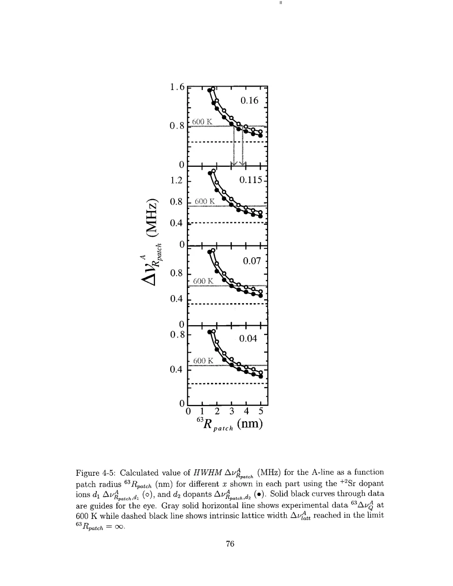
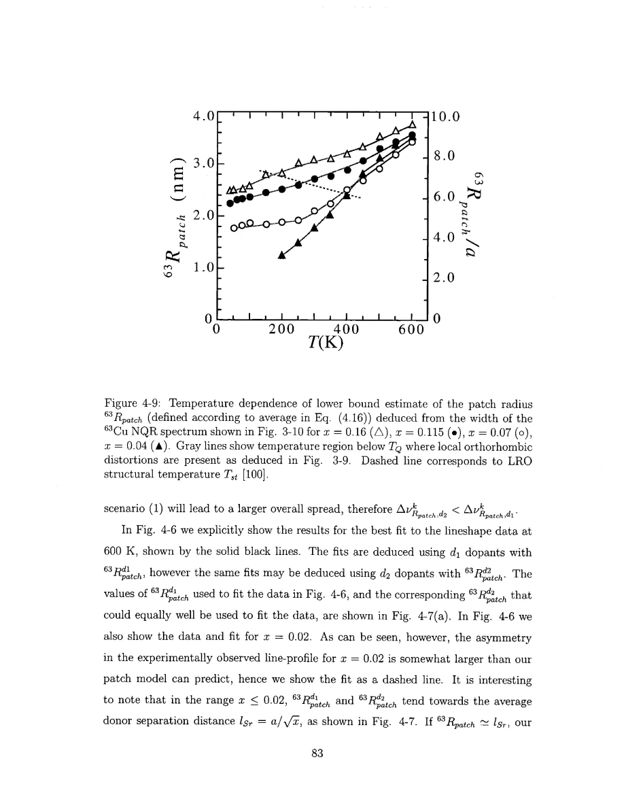

Singer · supplied source 2002 · chapter unit
5. How a linewidth becomes a radius
Counting fluctuations shrink with averaging area, so a fitted hole-spread scale can constrain R within the patch model.
The question: What assumption turns the observed local-state distribution into a nanometre length?
Before you start: the terms you need
- Nominal x: Sr atoms per LSCO formula unit, used as the average hole-doping label.
- Electric field gradient (EFG): curvature of the electric potential at a nucleus; determines the Cu quadrupole resonance.
- Knight shift: the nuclear resonance shift caused by electronic magnetic response, with orbital and spin contributions.
- T₁ and T₂: recovery of longitudinal nuclear magnetization and decay of transverse coherence; they answer different questions.
- Hyperfine form factor: the wavevector-dependent weighting through which a nucleus samples electronic spin fluctuations.
- HWHM: half width at half maximum; the thesis also defines an effective width from the second moment.
See → explain → check
Follow the idea in 3 pictures.
Picture 1 / 3
Count projected donors inside R
Look for: Locate the averaging area and donor count.
Swipe across the picture to read every label, or enlarge it below.
- Random Sr donors
- Average holes inside R
- xlocal = NSr / NCu
Teaching schematic: Sr projects from adjacent La layers; the circular patch is an averaging model, not a measured domain boundary.
The radius enters by defining how many donors share holes across how many Cu sites.
Picture 2 / 3
More averaging gives a smaller spread
Look for: Compare finite averaging with the uniform-hole limit.
Swipe across the picture to read every label, or enlarge it below.
- Finite R
- R → infinity
Teaching schematic; no measured points or calibrated scales.
R controls additional electronic width; ionic EFG width remains.
Picture 3 / 3
Separate a bound from a measured domain
Look for: Trace the linewidth assignment through the model.
Swipe across the picture to read every label, or enlarge it below.
- Observed full width
- Assign all excess to holes
- Fit R
- Report lower bound
Teaching schematic; no measured points or calibrated scales.
Unassigned broadening biases the Cu radius downward.
Explain it back.
Try answering aloud before opening the explanation.
If an overlooked structural contribution is removed, what happens to the inferred Cu R?
Less electronic width is needed, so the patch-model averaging radius can increase; this is why the original value is a lower bound.
Does matching the full line shape prove the patches are circular?
No. The circle is the model's averaging construction; other spatial models can share comparable distribution statistics.
Go deeper Follow the full argument
Define an averaging region
For a selected central Cu, Singer draws a circle of radius Rpatch in its CuO₂ plane. The number of Cu sites is approximated by its area divided by a². Sr donors assigned to the nearby La-layer sites contribute holes that are shared uniformly over that patch. The local hole concentration is the donor count divided by the Cu count. Outside the circle, the calculation uses nominal x. Different random configurations yield different local concentrations and hence different EFGs. This prescription is a controlled model of limited spatial averaging. It neither gives each hole a measured circular trajectory nor identifies a physical wall separating independent patches. Since the donor count fluctuates statistically, small areas have a wider fractional spread and large areas approach uniform doping. The geometrically distinct d1 and d2 donor choices alter the quantitative Cu line conversion and are compared explicitly.
Fit the excess width and keep the inequality
The model repeats the EFG calculation for many random donor configurations, forms a frequency histogram and adjusts R until the observed width and line shape are reproduced. At 600 K the reported characteristic radii are a few nanometres and exceed the average Sr separation in the applicable doping regime. Random ionic broadening alone, corresponding to effectively infinite hole-averaging radius, is insufficient to reproduce the full line. But the inferred Cu radius is a lower bound: if another mechanism supplied part of the measured width, less hole variation would be required and a larger averaging radius could fit. Local structural distortions are the leading example. The thesis therefore distinguishes the high-temperature tetragonal analysis from regions where orthorhombic broadening becomes significant. A sharp inferred radius drop there can reflect misassigned structural width rather than a sudden collapse of an electronic domain.
PDF p. 76 · PDF p. 78 · PDF p. 79 · PDF p. 81 · PDF p. 82 · PDF p. 83 · PDF p. 84 · PDF p. 85
The counting law and its failure point
The calculated hole-distribution effective width approximately follows the binomial-counting relation Δxpatch proportional to √[x(1−x)]/R. The factor √ln(4) converts a Gaussian second moment to the thesis's effective HWHM convention. It should not be replaced by an unqualified standard deviation, particularly when the small-count distribution is asymmetric. The independently relaxation-calibrated local extent is comparable to the model width in the stated regime; that is an important consistency check. The model becomes unreliable when the patch contains only about one donor and R approaches the mean Sr separation. In that dilute regime, treating a patch as a smooth locally homogeneous electronic region loses its premise. Also retain the geometry: a quoted radius 3–4 nm corresponds to diameter 6–8 nm. Neither scale is automatically the antiferromagnetic correlation length, whose temperature trend differs from the fitted averaging radius.
PDF p. 83 · PDF p. 84 · PDF p. 85 · PDF p. 86 · PDF p. 112 · PDF p. 113 · PDF p. 117
Translate the mathematics Essential equations and their meaning
Npatch ≈ πRpatch²/a²; xlocal = NSr/Npatch
Symbols: Npatch counts Cu sites; NSr counts donor holes accepted by the model.
Source Eqs. 4.9 and 4.12; the circular averaging and donor assignment are assumptions.
Δxpatch ≈ (a/Rpatch) √[ln(4) x(1−x)/π]
Symbols: x is the nominal mean, a the lattice spacing and Δxpatch the effective HWHM.
Source Eq. 4.18 approximates random count statistics; its use near the one-donor limit is unreliable.
Read the evidence Guided original source pages

PDF p. 76

PDF p. 83
What the evidence supports—and where it stops
- Cu EFG broadening mixes random ionic, electronic and structural contributions.
- The small-donor-count limit and donor-layer assumptions limit the radius inference.
Source version, reading coverage and preservation
Every substantive chapter and appendix was read from locally generated Windows OCR of the scanned original. Key figures, symbols, equations and boundaries were checked on readable full-page renders; PDF and printed page numbers agree at inspected locations.
Reviewed body pages: 10, 11, 12, 13, 14, 15, 16, 17, 18, 19, 20, 21, 22, 23, 24, 25, 26, 27, 28, 29, 30, 31, 32, 33, 34, 35, 36, 37, 38, 39, 40, 41, 42, 43, 44, 45, 46, 47, 48, 49, 50, 51, 52, 53, 54, 55, 56, 57, 58, 59, 60, 61, 62, 63, 64, 65, 66, 67, 68, 69, 70, 71, 72, 73, 74, 75, 76, 77, 78, 79, 80, 81, 82, 83, 84, 85, 86, 87, 88, 89, 90, 91, 92, 93, 94, 95, 96, 97, 98, 99, 100, 101, 102, 103, 104, 105, 106, 107, 108, 109, 110, 111, 112, 113, 114, 115, 116, 117, 118, 119, 120, 121, 122, 123, 124, 125, 126, 127, 128, 129, 130, 131, 132, 133, 134, 135, 136, 137. Bibliography pages 138–144 were not independently verified against every cited publication. Front matter was inspected for title, abstract and chapter mapping. The guide does not claim manual visual reading of every scan or exact transcription of all derivations; OCR is imperfect and the damaged abstract region was checked against the conclusions.
Source SHA-256: e5fdb96ea81a06f7a51624e02fa58319dc3d21926a030e06fbbedc7061f5937d. Original file bytes preserved locally, and in this room’s original download.
Thesis - Singer - 2002 - Nuclear resonance of electronic inhomogeneity in LSCO.pdf